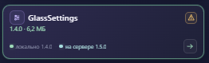

Рабочий HTML установщика с демонстрационным host. Кнопки меняют только план: MSI, реестр, службы и платформа не запускаются.
Проверка: «Удалить всё» → Installed опустеет, в плане только удаления; × отменяет действие. Жёлтый треугольник открывает предупреждение, Escape закрывает его. Доступные обновления зелёные, повреждения красные; Apply не выбирается автоматически.

Исходный образец из запроса. В текущем интерфейсе предупреждение открывается отдельным popup по треугольнику и не дублируется в панели плана.